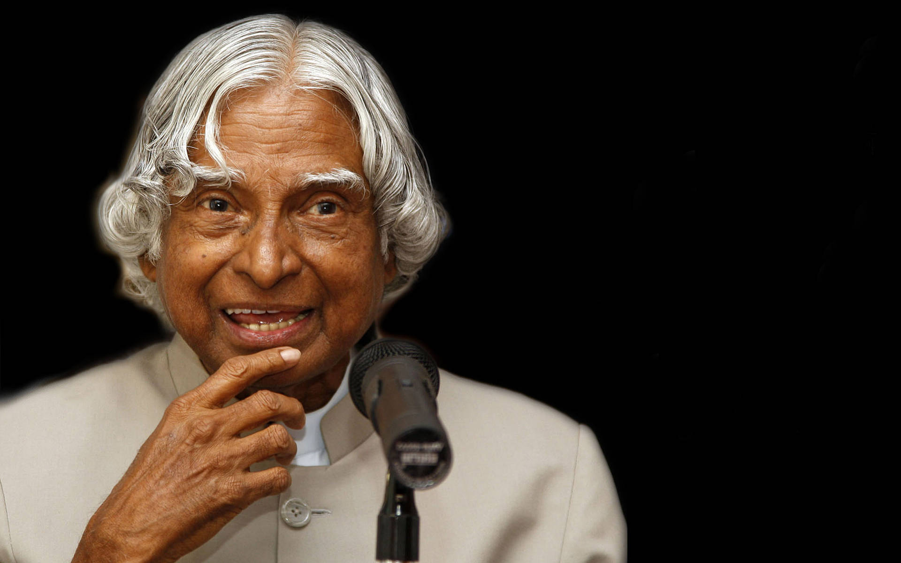

Dr. Avul Pakir Jainulabdeen Abdul Kalam, also known as the "Missile Man of India," was a renowned Indian scientist and the 11th President of India. He played a pivotal role in the development of India's civilian space program and military missile systems.
His dream was to see a united and inclusive India, where every citizen worked together for the nation's betterment. His legacy continues to inspire millions to dream big and work hard.
One of his dreams was to see India become a hub of innovation and research, where young minds could explore their creativity and contribute to solving the world's challenges. He tirelessly worked to inspire and empower the youth to pursue their dreams fearlessly.
Dr. Kalam's vision extended beyond science and technology. He was a passionate advocate for education and youth empowerment. He believed in the potential of young minds to shape India's future, often encouraging students to dream big and work hard to achieve their goals.
Dr. Kalam's life was driven by a powerful vision: to see India as a technologically advanced and self-reliant nation. He believed that science and technology could uplift the nation and its people, leading to prosperity and global recognition.
Born on October 15, 1931, in Rameswaram, Tamil Nadu, Dr. Kalam's contributions to India's space and defense programs are immeasurable. He was a key figure in the successful launch of the Pokhran-II nuclear tests in 1998.
"Dream, dream, dream. Dreams transform into thoughts and thoughts result in action."
Dr. Kalam's aim of providing quality education and healthcare to all was rooted in his belief that an educated and healthy population was essential for the progress of the nation. He envisioned a society where every individual had the opportunity to reach their full potential.
His humility, dedication, and unwavering commitment to his country earned him immense respect both nationally and internationally. Dr. A.P.J. Abdul Kalam passed away on July 27, 2015, leaving behind a legacy that continues to inspire generations.
Throughout his life, Dr. Kalam exemplified integrity, humility, and a deep sense of duty. His dream was to see a united and inclusive India, where every citizen worked together for the nation's betterment. His legacy continues to inspire millions to dream big and work hard.
Dr. Kalam's achievements include pioneering India's space and missile programs, advocating for technology-driven education, and his inspirational books that guide us to strive for greatness.